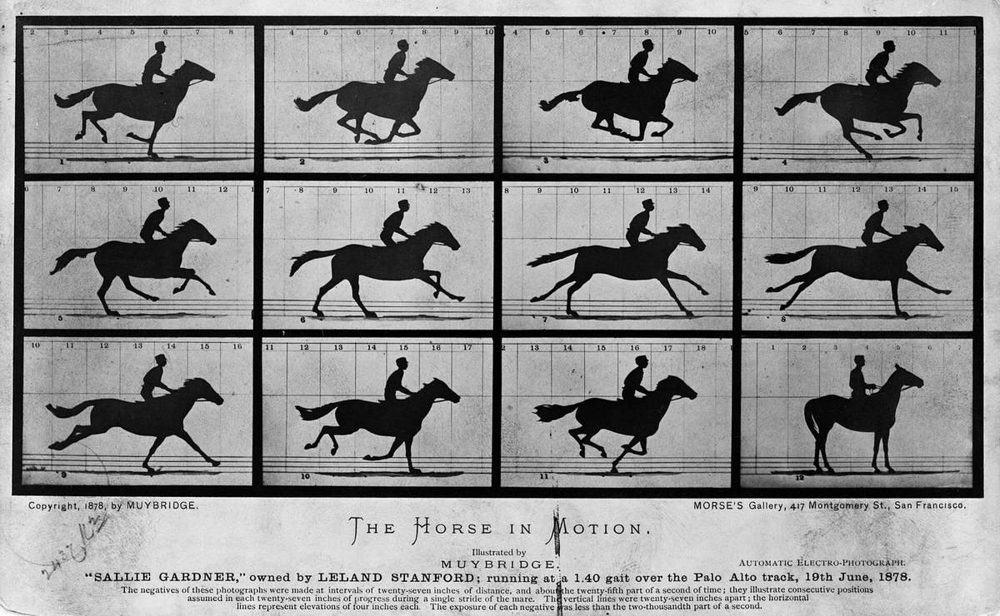
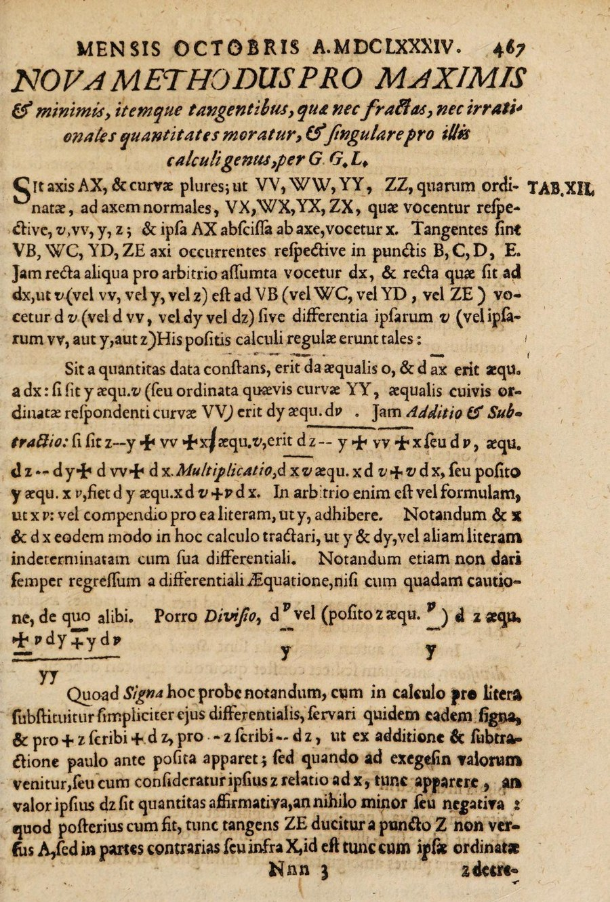
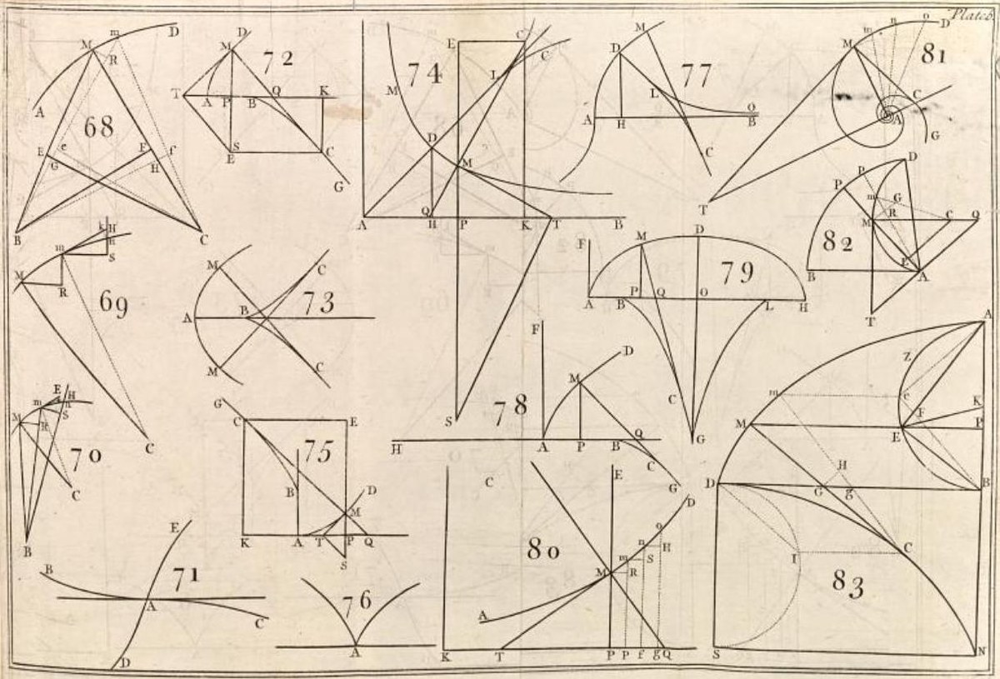

第7回
斜面は、下るにつれて急になり、飛び出す一点で空へ切れる。
hfordsa（2007年）／CC BY-SA 2.0／Wikimedia Commons（大倉山ジャンプ競技場。下を切り落とし、横長に切り出した）
第1部「微積分の再建」の2回目。平均の変化の割合 $\Delta f/\Delta x$ から、極限（第6回）を使って瞬間の変化の割合を定義し、導関数の4つの書き方（$df/dx$、$f'$、$\dot x$、$D$）と、その由来・使い分け・省略の段階を整理する。最後に、和・積・商・合成の微分の規則を、定義にさかのぼって1行ずつ導く。
第1回〜第6回と同じく、飛ばしてよい部分は飛ばしてよい。高校数学Ⅱ・Ⅲの微分と、1年の微分積分で習った内容も、短く一度は書く（「覚えている人は飛ばしてよい」）。この回の中心は第2節（記号の流派）と第3節（規則の導出）である。
第6回の極限・連続を使う。ε-δ そのものはこの回では出てこないが、「$\lim$ の中身は ε-δ に戻れる」ことは、いつでも 第6回の省略の段階：極限 で確かめられる。
記号が出るたびに、緑色の枠（記号）で「①読み方 ②日本語での意味 ③省略していない書き方 ④どこで出会うか」を書く。全部の記号は 記号索引 からも探せる。
| 記号 | 読み方 | ざっくりした意味 | 説明 |
|---|---|---|---|
| $\Delta x$、$\Delta f$ | デルタ・エックス、デルタ・エフ | $x$ の変化量、$f$ の変化量（1つの記号） | →1.2 |
| $\dfrac{\Delta f}{\Delta x}$ | デルタ・エフ・デルタ・エックス | 平均の変化の割合（割線の傾き） | →1.3 |
| $f'(a)$（微分係数） | エフ・プライム・エー | $x=a$ での瞬間の変化の割合（接線の傾き） | →1.4 |
| 微分可能 | びぶんかのう | その点で極限が存在する | →1.6 |
| $\dfrac{df}{dx}$、$\dfrac{d}{dx}$ | ディー・エフ・ディー・エックス、ディー・ディー・エックス | ライプニッツの書き方 | →2.2 |
| $\left.\dfrac{df}{dx}\right|_{x=a}$ | ― | 導関数に $x=a$ を代入した値 | →2.2 |
| $f'$、$f'(x)$ | エフ・プライム | ラグランジュの書き方 | →2.3 |
| $\dot x$、$\ddot x$ | エックス・ドット、エックス・ツードット | ニュートンの書き方（時間で微分） | →2.4 |
| $D$、$D_x$、$D^2$ | ディー | 微分する操作そのもの（演算子） | →2.5 |
| 微分の規則（和・積・商・合成） | ― | 部品の導関数から、組み合わせの導関数を作る | →3 |
省略の段階：導関数の書き方（極限の式 → $df/dx$ → $f'$ → $\dot x$）。
| 記号 | 意味 | 説明のある場所 |
|---|---|---|
| $\displaystyle\lim_{x\to a}f(x)$、$x\to a$ | $x$ を $a$ に近づけたときの $f(x)$ の行き先 | 第6回 2.1 |
| $x\to a^{+}$、$x\to a^{-}$ | 右から／左から近づける | 第6回 2.4 |
| 連続 | $\lim_{x\to a}f(x)=f(a)$ | 第6回 5.1 |
| 極限の四則・挟み撃ち | 和・積・商の極限 | 第6回 4.2、4.4 |
| $o(h)$ | $h$ に比べて桁違いに小さい | 第6回 6.2 |
| $:=$ | 左の名前を右の式で定める | 第1回 2.2 |
| $x'$（プライム） | 別のもの、または微分 | 第1回 4.4 |
| $x^{(2)}$ | 冪ではない括弧つき | 第1回 4.3 |
| 省略の段階（S0, S1, …） | 省略を1段ずつ元に戻す | 第1回 6.1 |
| $\Leftrightarrow$、$\Rightarrow$、$\forall$、$\exists$ | 同値・ならば・すべての・ある | 第2回、2.3、3.1、3.2 |
| $f:A\to B$、$f(x)$、定義域 | 関数・値・入力の範囲 | 第3回 1.2、1.4、1.6 |
| $f\circ g$（合成） | $g$ の出力を $f$ に入れる | 第3回 2.1 |
| 引数の省略 | $\psi(x,t)\to\psi$ | 第3回 7.1 |
| $|x|$、$e^x$、$\ln x$ | 絶対値、指数関数、自然対数 | 第3回 4.1、3.2、3.3 |
| $\sum$（総和）、二項係数 $\binom nk$ | 足し合わせ、組合せの数 | 第4回 2.1、11.2 |
速さは「進んだ距離 ÷ かかった時間」である。自動車の速度計は「ある瞬間の速さ」を表示するが、ある瞬間には、かかった時間が $0$ 秒で、進んだ距離も $0$ m。距離÷時間は $0/0$ になる。第6回の1.1で見た「代入できない」状況と同じである。
そこで、第6回と同じ方針をとる。瞬間そのものではなく、瞬間のすぐ近くの短い時間で平均の速さを計算し、その時間を縮めたときの行き先を見る。
数で確かめる。物体を落としたとき、$t$ 秒後までに落ちた距離を $s(t):=4.9\,t^2$（単位 m）とする（重力加速度を $9.8$ m/s² としたときの自由落下）。$t=1$ 秒の瞬間の速さを知りたい。$t=1$ から $t=1+h$ までの平均の速さは、
| $h$（秒） | $1$ | $0.1$ | $0.01$ | $0.001$ |
|---|---|---|---|---|
| 平均の速さ $4.9(2+h)$（m/s） | $14.7$ | $10.29$ | $9.849$ | $9.8049$ |
$h$ を縮めると、平均の速さは $9.8$ m/s に近づく。単位は、距離（m）÷時間（s）で m/s。これが「$t=1$ の瞬間の速さ」の候補である。これを一般に定義するために、まず「変化量」を表す記号を用意する。
表の計算を、落ちた距離のグラフに重ねると図1.1 になる。平均の速さは、2点を結ぶ直線の傾きとして見える。
PHOTO 1｜現実

走る馬の一瞬一瞬を、12枚の写真に分けて写した。
Eadweard Muybridge『The Horse in Motion』（1878年）／Public domain／Wikimedia Commons（縮小した）
①読み方：$\Delta x$ は「デルタ・エックス」。$\Delta f$ は「デルタ・エフ」。（$\Delta$ は大文字のデルタ。第1回 3.2。）
②日本語での意味：$x$ の変化量（増えた分。減ったときは負の数）。$\Delta f$ は、$f$ の値の変化量。
③省略していない書き方：「終わりの値 − 始めの値」。
$$ \Delta x:=x_{\text{終}}-x_{\text{始}},\qquad \Delta f:=f(x_{\text{終}})-f(x_{\text{始}}) $$
$x$ が $a$ から $a+h$ まで変わるなら、$\Delta x=(a+h)-a=h$、$\Delta f=f(a+h)-f(a)$。$\Delta x$ は「$\Delta$ 掛ける $x$」ではなく、2文字で1つの記号（第1回の省略の段階：掛け算の「文字を並べたら掛け算」という約束の例外）。$h$ や $dx$ など別の文字で書く本もある。
④どこで出会うか：微分の定義、差分近似（第48回）、物理の「変化量」（$\Delta T$、$\Delta E$ など）。
2つの変化量を、グラフの上の「横に進んだ分」と「上がった分」として描くと図1.2 になる。
①読み方：「デルタ・エフ・パー・デルタ・エックス」。「$x$ が $\Delta x$ 変わるあいだの、$f$ の平均の変化の割合」。
②日本語での意味：$x$ が1増えるあたりに平均して $f$ がどれだけ増えるか。グラフでは、2点を結ぶ直線（割線）の傾き。
③省略していない書き方：
$$ \frac{\Delta f}{\Delta x}=\frac{f(a+h)-f(a)}{(a+h)-a}=\frac{f(a+h)-f(a)}{h}\qquad(h\neq0) $$
$h\gt0$ でも $h\lt0$ でもよい。$h=0$ は割り算ができないので除く。
④どこで出会うか：速度（位置の変化÷時間）、傾き、「単位あたり」の量（密度、熱流束）。
例：$f(x):=x^2$、$a=1$ のとき、$h$ を変えて割線の傾きを計算する。
| $h$ | $x$ の動き | $\Delta f=f(1+h)-f(1)$ | $\dfrac{\Delta f}{\Delta x}=\dfrac{\Delta f}{h}$ |
|---|---|---|---|
| $2$ | $1\to3$ | $9-1=8$ | $\dfrac82=4$ |
| $1$ | $1\to2$ | $4-1=3$ | $3$ |
| $0.5$ | $1\to1.5$ | $2.25-1=1.25$ | $2.5$ |
| $0.1$ | $1\to1.1$ | $1.21-1=0.21$ | $2.1$ |
| $0.01$ | $1\to1.01$ | $1.0201-1=0.0201$ | $2.01$ |
傾きは $4,\ 3,\ 2.5,\ 2.1,\ 2.01$ と減って、$2$ に近づく。図 1.3 では、2点を通る青い破線（割線）が、点 $(1,1)$ のところで赤い直線に近づいていく。
動機：1.1 と 1.3 で、$h$ を縮めた平均の変化の割合に「行き先」があった。第6回の道具（$\lim$）で、この行き先に名前をつける。
①読み方：「エフ・プライム・エー」。「$f$ の $a$ での微分係数」。
②日本語での意味：$x=a$ での瞬間の変化の割合。平均の変化の割合 $\Delta f/\Delta x$ で、$\Delta x=h$ を $0$ に近づけたときの行き先。グラフでは、点 $(a,f(a))$ での接線の傾き。
③省略していない書き方：
$$ f'(a):=\lim_{h\to0}\frac{f(a+h)-f(a)}{h} $$
この極限が（実数として）存在するときだけ、定義される。$h\to0$ は $h\neq0$ を保ったまま近づける（第6回 2.1）。$h\gt0$ の側と $h\lt0$ の側の両方から近づけて、同じ値になる必要がある（第6回 2.4）。
もう一つの書き方：$x:=a+h$ とおくと、$h=x-a$。$h\to0$ は $x\to a$ と同じなので、
$$ f'(a)=\lim_{x\to a}\frac{f(x)-f(a)}{x-a} $$
④どこで出会うか：速度（位置の微分係数）、接線（第8回）、物理の「変化率」すべて。
なぜ2つの式が同じか、1行ずつ確かめる。
最小の具体例：$f(x):=x^2$、$a=3$。1行に1操作で。
数で確かめる。$h=1$ で $7$、$h=0.1$ で $6.1$、$h=0.01$ で $6.01$、$h=-0.1$ で $5.9$。左右から $6$ に近づく。
手順4.の「$6+h$」を、$h$ を横軸にしたグラフにすると図1.4 になる。
接線：点 $(a,f(a))$ を通り、傾きが $f'(a)$ の直線を、接線という。式は
$$ y=f(a)+f'(a)\,(x-a) $$
（点 $(a,f(a))$ を通る傾き $m$ の直線 $y=f(a)+m(x-a)$ の $m$ を $f'(a)$ にしたもの。）上の例では $y=9+6(x-3)=6x-9$。$x=3$ のとき $y=9$ で $f(3)=9$ と合う。
この接線を、$y=x^2$ のグラフに重ねたものが図1.5 である。
$a$ ごとに微分係数 $f'(a)$ を計算するのは大変である。$a$ を文字 $x$ のままにして、1回で全部求める。
$f(x):=x^2$ について、
この結果は、$x$ を決めるごとに1つの数が決まる。つまり $x\mapsto2x$ という関数（第3回 1.5）である。これを $f$ の導関数と呼ぶ。
$$ f'(x):=\lim_{h\to0}\frac{f(x+h)-f(x)}{h}\qquad(\text{この極限が存在する }x\text{ について}) $$
確かめ：$x=3$ を入れると $f'(3)=2\cdot3=6$。1.4 の微分係数と一致する。$x=1$ では $2$。図 1.3 の接線の傾き $2$ と一致する。
微分係数と導関数の区別：
「$f'$ は関数、$f'(a)$ は数」。第3回 1.4 の「$f$ と $f(x)$ はちがうもの」と同じ区別である。
図1.6 は、上の段に $y=x^2$ と4つの点での接線、下の段に導関数 $y=2x$ を描いたものである。
①読み方：「$f$ は $a$ で微分可能」「びぶんかのう」。
②日本語での意味：$x=a$ で、微分係数の極限が実数として存在する。グラフでは、接線が（傾きをもつ直線として）ちょうど1つ決まる。
③省略していない書き方：「$\displaystyle\lim_{h\to0}\frac{f(a+h)-f(a)}{h}$ が実数として存在する」。「存在する」とは、$h\to0^{+}$ と $h\to0^{-}$ の極限がどちらも存在して、同じ値になること（第6回 2.4）。
④どこで出会うか：「微分可能な関数」を前提とする定理すべて（平均値の定理、テイラー展開：第9回）、微分方程式の解の性質。
微分可能 ⇒ 連続。1行ずつ。$f$ が $a$ で微分可能とする。
逆は成り立たない：連続でも微分可能でない例。$f(x):=|x|$（第3回 4.1）の $a=0$。
$|x|$ は $x=0$ で連続（第6回 5.2）だが、微分可能ではない。グラフの尖った点では、左から見た傾き $-1$ と右から見た傾き $+1$ が食い違い、接線が決まらない。
図1.7 の上の段は $y=|x|$、下の段は差分商 $\dfrac{|h|}{h}$ を $h$ の関数として描いたものである。
もう一つの例：$f(x):=x|x|$ の $a=0$。$\dfrac{f(h)-f(0)}{h}=\dfrac{h|h|}{h}=|h|$（$h\neq0$ で約分）。$h\to0$ で $|h|\to0$。よって $f'(0)=0$。微分可能である。
$|x|$ と比べるために、図1.8 に $y=x|x|$ を描く。
1.5 で導関数 $f'$ を作った。ところが、本によって、同じ導関数が $f'(x)$、$\dfrac{df}{dx}$、$\dot x$、$Df$ と書かれる。これは科目ごとに、見たいものが違うからである。
以下、1つずつ、記号の枠で読み方と省略前の形を確かめる。由来は概略だけ書く（年代の細部は、この教材では確認していないので断定しない）。
4つの書き方の関係を、先に1枚の図にしておく（図2.1）。
①読み方：$\dfrac{df}{dx}$ は「ディー・エフ・ディー・エックス」。「$f$ を $x$ で微分したもの」。$\dfrac{d}{dx}$ は「ディー・ディー・エックス」。「$x$ で微分する」という操作。
②日本語での意味：$f$ の変化量と $x$ の変化量の比の、変化量を限りなく小さくしたときの行き先。分子の $d$ は「微小な差」を表す文字で、分母の $dx$ は「$x$ の微小な変化」。何を何で微分しているか（どの変数について）が、分母に見えている。
③省略していない書き方：
$$ \frac{df}{dx}:=\lim_{\Delta x\to0}\frac{\Delta f}{\Delta x}=\lim_{\Delta x\to0}\frac{f(x+\Delta x)-f(x)}{\Delta x} $$
（$\Delta x$ は 1.2。1.5 の $h$ と同じもの。）$\dfrac{d}{dx}$ は、関数 $f$ を受け取って、導関数を返す操作で、$\dfrac{d}{dx}f$ と $\dfrac{df}{dx}$ は同じ。$y=f(x)$ のときは $\dfrac{dy}{dx}$ とも書く。
④どこで出会うか：物理・工学の教科書全般（$\dfrac{dx}{dt}$、$\dfrac{dT}{dx}$）、微分方程式、連鎖律（第12回）。
$\dfrac{df}{dx}$ は、分数に見えるが、いまの定義では極限 $\lim\Delta f/\Delta x$ を1つの記号にしたもので、「$df$ を $dx$ で割った」ものではない。$df$ と $dx$ をそれぞれ独立した記号として扱う意味づけは、第8回で与える。それまでは「分数のように見える1つの記号」と読み、$dx$ を約分したり、移項したりしない。
①読み方：「ディー・エフ・ディー・エックスの、$x=a$ での値」。縦線は「〜のとき」。
②日本語での意味：導関数を求めてから、$x=a$ を入れた1つの数。微分係数 $f'(a)$ と同じ。
③省略していない書き方：$\left.\dfrac{df}{dx}\right|_{x=a}:=f'(a)=\left(\dfrac{df}{dx}\right)(a)$。順序は「微分してから代入」。$x=a$ を入れてから微分すると定数を微分することになり、$0$ になってしまう。
④どこで出会うか：接線の傾き、境界条件（「$\left.\dfrac{dy}{dx}\right|_{x=0}=0$」）、熱力学。
例：$f(x)=x^2$ で $\left.\dfrac{df}{dx}\right|_{x=3}=2\cdot3=6$（1.5 の結果 $2x$ に $x=3$ を代入）。
「微分してから代入」の順序を、図2.2 の2本の流れで比べる。
PHOTO 2｜現実

dx と dy を使った、1684年のライプニッツの論文の頁である。
G. W. Leibniz『Nova Methodus pro Maximis et Minimis』、Acta Eruditorum 1684年10月／Public domain／Wikimedia Commons（縮小した）
MITATE 2｜見立て
同じ画面に、別の書き方が四つ並ぶ。
趙之謙『四体書屏』（1869年）の4幅／Public domain／Wikimedia Commons（4幅を横に並べた。Commons 上は「四体书屏 1〜4」の4ファイル）
①読み方：「エフ・プライム」。$f'(x)$ は「エフ・プライム・エックス」。
②日本語での意味：$f$ から作った導関数。関数 $f$ の右上にプライムをつけて、「$f$ に対応する導関数という別の関数」を表す。
③省略していない書き方：
$$ f'(x):=\frac{df}{dx}(x)=\lim_{h\to0}\frac{f(x+h)-f(x)}{h} $$
第1回 4.4 で予告した記号 (b)（第1回 4.4）が、これである。何で微分したか（変数）は、記号に書かれていない。関数が1変数なら、その変数に決まるので困らない。
④どこで出会うか：数学の教科書全般、量子力学の $\psi'(x)$ など。
$f'(x^2)$ は「導関数 $f'$ に $x^2$ を入れたもの」。一方 $\bigl(f(x^2)\bigr)'$ は「合成関数 $x\mapsto f(x^2)$（第3回 2.1）を $x$ で微分したもの」で、別の値になる。$f=\sin$、$x=1$ で比べる。
プライムは「関数 $f$ の導関数」に付く記号で、「中身を入れた式」に付くものではない。中身の式に付けたいときは、括弧で包んで $\bigl(f(x^2)\bigr)'$ と書く。
2つの値の違いを、接線の傾きとして図2.3 で見る。
①読み方：$\dot x$ は「エックス・ドット」。$\ddot x$ は「エックス・ツードット」「エックス・ダブルドット」。
②日本語での意味：時間で微分したもの。$\dot x$ は $x$ の時間微分（位置なら速度）。$\ddot x$ は、$\dot x$ をもう一度時間で微分したもの（位置なら加速度）。
③省略していない書き方：
$$ \dot x:=\frac{dx}{dt}=\lim_{\Delta t\to0}\frac{x(t+\Delta t)-x(t)}{\Delta t},\qquad \ddot x:=\frac{d}{dt}\dot x=\frac{d^2x}{dt^2} $$
（$\dfrac{d^2x}{dt^2}$ の記法と「2階微分」は 第8回で説明する。ここでは「$\dot x$ をもう一度微分」と読む。）ドットは時間 $t$ による微分だけを表す。独立変数 $t$ は記号に書かれていない。
④どこで出会うか：力学（運動方程式 $m\ddot x=F$）、制御工学、解析力学。
使い分けの慣習：物理・工学では、ドットは時間微分、プライムは空間（位置）での微分とする本が多い（$\dot x=dx/dt$、$\psi'(x)=d\psi/dx$）。ただし、これは慣習で、その本の宣言が優先する。
ドットの意味を、ボールを真上に投げたときの位置・速度・加速度で見る（図2.4。式は 3.9 の例で $x_0=0$、$v_0=10$、$g=9.8$ としたもの）。
①読み方：$Df$ は「ディー・エフ」。$D_xf$ は「ディー・エックス・エフ」。$D^2f$ は「ディー・ツー・エフ」。
②日本語での意味：「微分する」という操作そのものに名前をつけた記号。$D$ は関数を受け取って、導関数という関数を返す。
③省略していない書き方：
$$ Df:=f',\qquad D_xf:=\frac{df}{dx},\qquad D^2f:=D(Df)=(D\circ D)f $$
$D^2$ は「$D$ の2乗」ではなく、$D$ を2回続けて使う（第3回 2.1 の合成 $D\circ D$）。第1回 4.2 の冪（掛け算の繰り返し）に対して、ここでは「操作の繰り返し」。$D$ どうしの和・定数倍は、$(D+c)f:=Df+cf$ のように、関数に作用させてから足す約束である。
④どこで出会うか：常微分方程式（第28回〜）、プログラミング言語の微分関数。
同じ事実を4つの書き方で書き並べる。「$x^3$ を $x$ で微分すると $3x^2$」（3.3 で導く。ここでは書き方の対応だけ見る）。
| 流儀 | 書き方 | $x=2$ での値 |
|---|---|---|
| ライプニッツ | $\dfrac{d}{dx}x^3=3x^2$、$\left.\dfrac{d(x^3)}{dx}\right|_{x=2}=12$ | $3\cdot2^2=12$ |
| ラグランジュ | $f(x):=x^3$ とおいて $f'(x)=3x^2$、$f'(2)=12$ | $12$ |
| ニュートン | 変数が時間 $t$ のとき、$x(t):=t^3$ なら $\dot x=3t^2$ | $t=2$ で $12$ |
| $D$ | $D(x^3)=3x^2$、$D^2(x^3)=D(3x^2)=6x$ | $D(x^3)$ は $x=2$ で $12$ |
| 流儀 | 書き方 | 強み | 弱み | 主な場面 |
|---|---|---|---|---|
| ライプニッツ | $\dfrac{df}{dx}$、$\dfrac{dy}{dx}$ | 変数と単位が見える（$\dfrac{dx}{dt}$ は m/s）。連鎖律が分数のように見える（第12回） | 1行が縦に長い。分数と誤解しやすい | 物理・工学・微分方程式 |
| ラグランジュ | $f'(x)$、$f'$ | 短い。関数を扱う議論に向く | 変数が見えない。$f'(x^2)$ の曖昧さ（2.3） | 数学の教科書 |
| ニュートン | $\dot x$、$\ddot x$ | 最も短い。時間微分と一目でわかる | 時間以外の変数には使えない | 力学・制御・解析力学 |
| $D$ | $Df$、$D_xf$、$D^2$ | 微分を足したり掛けたりできる | 変数が見えにくい（$D_x$ で補う） | 微分方程式・線形代数 |
どの書き方でも、中身は同じ極限である。本を読むときは、最初に出てくる定義で「この本はどれを使うか」を確かめる。1冊の中で複数の流儀が混ざることも多い（たとえば $\dot x$ と $x'$ を、時間微分と位置微分で使い分ける）。
人物と世紀は一般に知られた概略で、年代・初出の細部はこの教材では調べていない。記号の使い方の違いが目的なので、由来の正確さには立ち入らない。
| 段階 | 書き方 | 何を省いたか | 省いても困らない理由 |
|---|---|---|---|
| S0 | $f'(x):=\displaystyle\lim_{\Delta x\to0}\frac{f(x+\Delta x)-f(x)}{\Delta x}$（この極限が存在する $x$ ごとに。$\lim$ は第6回の ε-δ（S0）に戻れる） | （省略なし） | ― |
| S1 | $\dfrac{df}{dx}(x):=\displaystyle\lim_{\Delta x\to0}\frac{\Delta f}{\Delta x}$、ただし $\Delta f:=f(x+\Delta x)-f(x)$ | 分子の長い差を $\Delta f$ という名前にまとめる | $\Delta f$ の定義（1.2） |
| S2 | $\dfrac{df}{dx}$ | 極限の記号 $\lim$ と $\Delta$ をやめ、1つの記号にする。引数 $(x)$ も省く | 引数の省略は 第3回の省略の段階：引数 と同じ約束 |
| S3 | $\dfrac{dy}{dx}$（$y=f(x)$） | 関数名 $f$ の代わりに、従属変数の名前 $y$ を使う | $y=f(x)$ と書いてあれば戻れる |
| S4 | $f'(x)$ | 変数の名前 $x$ を分母に書かない | $f$ が1変数関数なら $x$ に決まる |
| S5 | $f'$ | 引数 $(x)$ も省き、関数としての導関数だけにする | 「$f'$ は関数」と約束した（1.5） |
| S6 | $\dot x$ | 関数名と変数名を同じ文字にし（$x$ は $t$ の関数）、「時間で」も省く | ドットは時間微分と約束した。「$x$ は $t$ の関数」を読者が補う（第3回の abbr-fn-args の例） |
S6 を見たら、S0 まで戻す練習をする。$\dot x$ → $\dfrac{dx}{dt}$（S2 の形。時間 $t$ で微分）→ $\displaystyle\lim_{\Delta t\to0}\dfrac{x(t+\Delta t)-x(t)}{\Delta t}$（S0 の形）。
上の表を、1段ずつ下りる階段として描くと図2.5 になる。
$x^7+3x^5$ のような式の導関数を、毎回 $\lim_{h\to0}$ から計算するのは大変である。そこで、「部品の導関数がわかっているとき、部品を組み合わせた関数の導関数を、部品の導関数から作る」規則を用意する。規則は暗記の公式ではなく、定義 1.5 と極限の規則（第6回 4.2）から1行ずつ導ける。この節で、すべて導く。
①読み方：「和の微分」「定数倍の微分」「積の微分（ライプニッツ則）」「商の微分」「合成関数の微分（連鎖律）」。
②日本語での意味：組み合わせた関数の導関数を、部品の導関数と部品の値から作る手順。
③省略していない書き方：$f$、$g$ が $x$ で微分可能なとき（1.6）、
ライプニッツの書き方では、$u:=g(x)$ とおいて $\dfrac{d(f\circ g)}{dx}=\dfrac{df}{du}\cdot\dfrac{du}{dx}$。
④どこで出会うか：すべての微分計算。多変数の連鎖律は 第12回。
PHOTO 3｜現実

曲線と接線の図を番号順に並べた、18世紀の微積分の教科書の図版である。
『The Method of Fluxions, both Direct and Inverse』（1730年）図版6／Public domain／Wikimedia Commons（縮小した）
(1) 定数の導関数は $0$。$f(x):=c$（定数）。
(2) 定数倍：
(3) 和：
数で確かめる。$(3x^2+5x)'=3\cdot2x+5\cdot1=6x+5$（$x^2$ の導関数は $2x$、$x$ の導関数は $1$）。$x=2$ で $17$。差分商 $\dfrac{F(2.001)-F(2)}{0.001}$（$F(x)=3x^2+5x$）は $17.003$ で、$17$ に近い。
動機：$x^2$ の導関数は 1.5 で $2x$ と求めた。$x^3$、$x^4$、…、一般の $x^n$ は？
最小の例 $x^3$：
一般の自然数 $n$：二項定理（第4回 11.4）で $(x+h)^n=\displaystyle\sum_{k=0}^{n}\binom nk x^{n-k}h^k$（$\sum$、$\binom nk$）。
確かめ：$n=2$ で $2x$（1.5）、$n=3$ で $3x^2$（上）、$n=1$ で $1\cdot x^0=1$。
負の冪 $n=-1$（$x\neq0$）：
平方根 $\sqrt x$（$x\gt0$）：
任意の実数の冪 $\alpha$ でも $(x^\alpha)'=\alpha x^{\alpha-1}$（$x\gt0$）が成り立つ。導出は 3.8 で行う（指数・対数の微分と合成の規則を使うため）。
$\sin$：加法定理 $\sin(x+h)=\sin x\cos h+\cos x\sin h$ を使う（高校の公式）。
数で確かめる。$x=0$ で $\cos0=1$。$\sin$ のグラフの原点での傾きは $1$（図 3.1）。
$\cos$：$\cos(x+h)=\cos x\cos h-\sin x\sin h$。
$\sin$ の接線の傾きと $\cos$ の高さを、図3.1 で上下に並べて比べる。
指数関数 $e^x$：
第3回で $e$ は数列の極限 $\lim_{n\to\infty}(1+1/n)^n$ として定義された（第3回 3.2）。ここで使うのは、整数 $n$ を連続な変数 $1/t$ に替えた形である。この教材では「同じ値 $e$ に近づく」ことを認めて使う（正確な証明は省略する。第9回で別の形で確かめる）。数で確かめる：
| $t$ | $0.1$ | $0.01$ | $0.001$ | $-0.001$ |
|---|---|---|---|---|
| $(1+t)^{1/t}$ | $2.5937\cdots$ | $2.7048\cdots$ | $2.7169\cdots$ | $2.7196\cdots$ |
| $(e^t-1)/t$ | $1.0517\cdots$ | $1.0050\cdots$ | $1.0005\cdots$ | $0.9995\cdots$ |
$e=2.71828\cdots$ に近づいており、2段目は $1$ に近づく。
$(e^x)'=e^x$ を、図3.2 のグラフで確かめる。
自然対数 $\ln x$（$x\gt0$）：
動機：$x^2\cdot x^3$ は $x^5$ だから、導関数は $5x^4$。ところが「各因子の導関数の積」は $2x\cdot3x^2=6x^3$ で、合わない。正しい規則は何か。
$(fg)'(x)=f'(x)g(x)+f(x)g'(x)$ を導く。
積の規則は、長方形の面積の増え方として図3.3 に描ける。$f(x)$ を横の長さ、$g(x)$ を縦の長さとする。
数で確かめる。$f=x^2$、$g=x^3$：$f'g+fg'=2x\cdot x^3+x^2\cdot3x^2=2x^4+3x^4=5x^4$。直接 $(x^5)'=5x^4$ と一致。
$(fg)'=f'g'$ ではない。上の例で、$f'g'=2x\cdot3x^2=6x^3\neq5x^4$。積の導関数は「片方だけ微分して他方はそのまま」を2通り足す。
まず逆数 $1/g$ の導関数を求め、積の規則を使う。$g(x)\neq0$ とする。
例：$\tan x=\dfrac{\sin x}{\cos x}$ の導関数。
数で確かめる。$x=\pi/4$ で $\cos^2=1/2$ なので $1/\cos^2=2$。差分商 $\dfrac{\tan(\pi/4+0.001)-1}{0.001}=2.002$。
動機：$\sin(x^2)$ のように、関数の中に関数が入っているとき（第3回 2.1）。ライプニッツ記法では、$u:=g(x)$ として $\dfrac{\Delta f}{\Delta x}=\dfrac{\Delta f}{\Delta u}\cdot\dfrac{\Delta u}{\Delta x}$ と変形できる（$\Delta u$ を約分した形）。この式から $\Delta\to0$ とすると $\dfrac{df}{dx}=\dfrac{df}{du}\cdot\dfrac{du}{dx}$ が見込める。ただし $\Delta u=0$ になりうる（$g$ が $x$ の近くで同じ値を取る）と、$0$ で割ることになり、この形では証明にならない。それを避けた導出を書く。
$u:=g(x)$ とおく。$f$ は $u$ で微分可能とする。
手順3.の式は、$f(u+k)=f(u)+f'(u)k+\eta(k)k$ とも書ける。最後の項は $k$ に比べて桁違いに小さい（$o(k)$：第6回 6.2）。つまり微分可能とは、$f(u+k)=f(u)+f'(u)k+o(k)$ と書けることと言い換えられる。
例1 $\sin(x^2)$：外側 $f=\sin$、内側 $g(x)=x^2$。$f'=\cos$、$g'(x)=2x$。したがって $\bigl(\sin(x^2)\bigr)'=\cos(x^2)\cdot2x=2x\cos(x^2)$。$x=1$ で $2\cos1=1.0806\cdots$（2.3 の値）。差分商 $\dfrac{\sin(1.001^2)-\sin1}{0.001}=1.0795\cdots$。
連鎖律は「伸び縮みの倍率の掛け算」として図3.4 に描ける。$x$ の小さな区間が、$u=x^2$ で何倍に伸び、$y=\sin u$ で何倍に縮むかを見る。
例2 $e^{-x^2}$：外側 $e^u$、内側 $u=-x^2$。$\dfrac{d}{du}e^u=e^u$、$\dfrac{du}{dx}=-2x$。したがって $\bigl(e^{-x^2}\bigr)'=e^{-x^2}\cdot(-2x)=-2xe^{-x^2}$。
$\bigl(f(g(x))\bigr)'$ を $f'(x)$ だと思って、内側の $g'(x)$ を掛け忘れるのが典型的な誤り。$\bigl(\sin(x^2)\bigr)'=\cos(x^2)$ ではない。外側を微分して中身をそのまま入れ、その後に内側の導関数を掛ける。
実数の冪 $x^\alpha$（$x\gt0$）：
一般の底 $a^x$（$a\gt0$）：
確かめ：$a=e$ のとき $\ln e=1$ で $(e^x)'=e^x$（3.4）と一致。$a=2$、$x=0$ で $2^0\ln2=0.6931\cdots$。
運動の例（ニュートンの記法）：位置 $x(t):=x_0+v_0t-\tfrac12gt^2$（$x_0$、$v_0$、$g$ は定数）。
確かめ：$v_0=10$ m/s、$g=9.8$ m/s²、$t=1$ s のとき $\dot x=10-9.8=0.2$ m/s。単位は、$v_0$ が m/s、$gt$ が (m/s²)·s = m/s で一致する。$\ddot x=-9.8$ m/s²。
微分演算子 $D$ の例：$y(x):=e^{\lambda x}$（$\lambda$ は定数）。
$\lambda=-1$ や $\lambda=-2$ のとき $(D^2+3D+2)y=0$。$D^2y+3Dy+2y=0$ という方程式を考えると、$y=e^{-x}$ と $y=e^{-2x}$ が解である。微分方程式を解く第28回の出発点にあたる式である。
| $f(x)$ | $f'(x)$ | 導いた場所 |
|---|---|---|
| $c$（定数） | $0$ | 3.2 |
| $x^\alpha$ | $\alpha x^{\alpha-1}$ | 3.3（自然数・$-1$・$1/2$）、3.8（実数） |
| $\sin x$、$\cos x$ | $\cos x$、$-\sin x$ | 3.4 |
| $\tan x$ | $1/\cos^2x$ | 3.6 |
| $e^x$、$a^x$ | $e^x$、$a^x\ln a$ | 3.4、3.8 |
| $\ln x$ | $1/x$ | 3.4 |
| $f+g$、$cf$ | $f'+g'$、$cf'$ | 3.2 |
| $fg$ | $f'g+fg'$ | 3.5 |
| $f/g$ | $(f'g-fg')/g^2$ | 3.6 |
| $f(g(x))$ | $f'(g(x))\,g'(x)$ | 3.7 |
$f(x):=x^2+x$ の $a=2$ での微分係数 $f'(2)$ を、定義から求め、接線の式を書け。
解答
① $f(2)=4+2=6$、$f(2+h)=(2+h)^2+(2+h)=4+4h+h^2+2+h=6+5h+h^2$ （展開）。
② $\dfrac{f(2+h)-f(2)}{h}=\dfrac{5h+h^2}{h}$ （$6-6=0$）。
③ $=5+h$ （$h\neq0$ で約分）。$h\to0$ で $5$。よって $f'(2)=5$。
④ 接線（1.4）：$y=f(2)+f'(2)(x-2)=6+5(x-2)=5x-4$。
⑤ 確かめ：規則で $f'(x)=2x+1$、$x=2$ で $5$。一致。
$x(t):=t^3$ について、(1) $\dfrac{dx}{dt}$、(2) $x'$、(3) $\dot x$、(4) $Dx$ を求め、(5) $\ddot x$ の $t=1$ での値を求めよ。
解答
① (1)〜(4)：どれも「$x$ を $t$ で微分したもの」で同じ。$(t^3)'=3t^2$（3.3）。→ すべて $3t^2$。
② 注意：(2) の $x'$ は、「どの変数で微分したか」が書かれていない。$x$ が $t$ だけの関数なので $t$ に決まる（省略の段階 S4）。(3) のドットは時間微分と約束されている（S6）。
③ (5)：$\ddot x=\dfrac{d}{dt}\dot x=\dfrac{d}{dt}(3t^2)=6t$。$t=1$ で $6$。
④ 確かめ：$\dot x(1)=3$。$\ddot x(1)=6$。
(1) $\bigl(x^2\sin x\bigr)'$ を求め、$x=\pi$ での値を答えよ。(2) $\left(\dfrac{x}{x^2+1}\right)'$ を求め、$x=2$ での値を答えよ。
解答
① (1)：積の規則（3.5）で $f=x^2$、$g=\sin x$。$f'=2x$、$g'=\cos x$。
② $(x^2\sin x)'=2x\sin x+x^2\cos x$。
③ $x=\pi$：$\sin\pi=0$、$\cos\pi=-1$ なので $2\pi\cdot0+\pi^2\cdot(-1)=-\pi^2=-9.8696\cdots$。
④ (2)：商の規則（3.6）で $f=x$、$g=x^2+1$。$f'=1$、$g'=2x$。
⑤ $\dfrac{1\cdot(x^2+1)-x\cdot2x}{(x^2+1)^2}=\dfrac{x^2+1-2x^2}{(x^2+1)^2}=\dfrac{1-x^2}{(x^2+1)^2}$。
⑥ $x=2$：$\dfrac{1-4}{25}=-0.12$。
$f(x):=e^{-x^2}$ の $x=1$ での接線の式を求めよ。
解答
① $f'(x)=-2xe^{-x^2}$（3.7 の例2）。
② $f(1)=e^{-1}=0.36788\cdots$、$f'(1)=-2e^{-1}=-0.73576\cdots$。
③ 接線：$y=f(1)+f'(1)(x-1)=e^{-1}-2e^{-1}(x-1)=e^{-1}(3-2x)$。
④ 確かめ：$x=1$ で $e^{-1}(3-2)=e^{-1}$ で $f(1)$ と一致。
⑤ 図で確かめる（図4.1）。
$f(x):=\begin{cases}x^2&(x\ge0)\\-x^2&(x\lt0)\end{cases}$（つまり $x|x|$）は $x=0$ で微分可能か。可能なら $f'(0)$ を求めよ。
解答
① $\dfrac{f(h)-f(0)}{h}=\dfrac{f(h)}{h}$（$f(0)=0$）。
② $h\gt0$：$\dfrac{h^2}{h}=h\to0$。 $h\lt0$：$\dfrac{-h^2}{h}=-h\to0$。
③ 左右の極限が一致して $0$（第6回 2.4）。よって微分可能で $f'(0)=0$。
④ ($|x|$ との違い：$|x|$ は傾きが $\pm1$ で食い違うが、$x|x|$ の傾きは $0$ に揃う。)
$\Delta x=2.5-2=0.5$。$\Delta f=f(2.5)-f(2)=6.25-4=2.25$。$\dfrac{\Delta f}{\Delta x}=\dfrac{2.25}{0.5}=4.5$（1.3）。確かめ：微分係数 $f'(2)=4$ より少し大きい（区間が右に伸びているため）。
(1) $f(x)=3x^2+2$、$a=2$（$f(2)=14$ が引かれているので）。$f'(x)=6x$、$f'(2)=12$。
(2) $f(x)=x^4$、$a=2$（$f(2)=16$）。$f'(x)=4x^3$、$f'(2)=32$。
書き換えの手順：$\dfrac{f(a+h)-f(a)}{h}$（1.4）の形に当てはめる。
$\dfrac{dy}{dx}=y'=Dy=5x^4$（3.3）。$x=1$ で $5$。
積の規則：$f=x^3$、$g=e^x$。$(x^3e^x)'=3x^2e^x+x^3e^x=(3x^2+x^3)e^x$。$x=1$ で $4e=10.873\cdots$。
① 商の規則：分子 $p=x^2+4$、分母 $q=x^2-4$、$p'=2x$、$q'=2x$。
② $f'=\dfrac{2x(x^2-4)-(x^2+4)\cdot2x}{(x^2-4)^2}=\dfrac{2x^3-8x-2x^3-8x}{(x^2-4)^2}=\dfrac{-16x}{(x^2-4)^2}$。
③ $x=3$：$\dfrac{-48}{25}=-1.92$。
(1) 外側 $\sin u$、内側 $u=3x^2$。$\cos(3x^2)\cdot6x=6x\cos(3x^2)$。
(2) 外側 $\sqrt u$（導関数 $\dfrac1{2\sqrt u}$）、内側 $u=1+x^2$（導関数 $2x$）。$\dfrac1{2\sqrt{1+x^2}}\cdot2x=\dfrac{x}{\sqrt{1+x^2}}$。
$y'=6x+4$、$x=0$ で $4$。接線 $y=1+4(x-0)=4x+1$。
① $\dot x$：外側 $\cos u$、内側 $u=\omega t$（$du/dt=\omega$）。$\dot x=-\sin(\omega t)\cdot\omega=-\omega\sin(\omega t)$。
② $\ddot x=\dfrac{d}{dt}\bigl(-\omega\sin(\omega t)\bigr)=-\omega\cdot\cos(\omega t)\cdot\omega=-\omega^2\cos(\omega t)$。
③ $x=\cos(\omega t)$ だから $\ddot x=-\omega^2x$。単振動の方程式。
① 接点 $(a,a^3)$ での接線：$y=a^3+3a^2(x-a)$。
② $x$ 切片：$y=0$ として $0=a^3+3a^2(x-a)$。
③ $a\neq0$ で両辺を $a^2$ で割る：$0=a+3(x-a)$、つまり $x=a-\dfrac a3=\dfrac{2a}3$。
④ $\dfrac{2a}3=6$ より $a=9$。点は $(9,729)$。
⑤ 確かめ：接線 $y=729+243(x-9)$ で $x=6$ のとき $729-729=0$。
図5.1 で確かめる。
① $f'(x)=3x^2+2x-1$。
② (a) $3x^2+2x-1=0$。因数分解 $(3x-1)(x+1)=0$（展開して $3x^2+3x-x-1=3x^2+2x-1$ と確かめた）。$x=\tfrac13$、$x=-1$。
③ (b) $3x^2+2x-1=-1$、つまり $3x^2+2x=0$。$x(3x+2)=0$。$x=0$、$x=-\tfrac23$。
① 連続：$x\to1^{-}$ で $3$、$x\to1^{+}$ で $3\cdot1=3$、$f(1)=3$。3つとも一致（第6回 5.1）。
② 差分商 $\dfrac{f(1+h)-f(1)}{h}$：$h\lt0$ のとき $\dfrac{3-3}{h}=0$。
③ $h\gt0$ のとき $\dfrac{3(1+h)-3}{h}=\dfrac{3h}{h}=3$。
④ 左極限 $0$、右極限 $3$ で一致しない。極限が存在しないので微分可能でない（1.6）。
図5.2 で確かめる。


_Plate_6.jpg){kind=link}